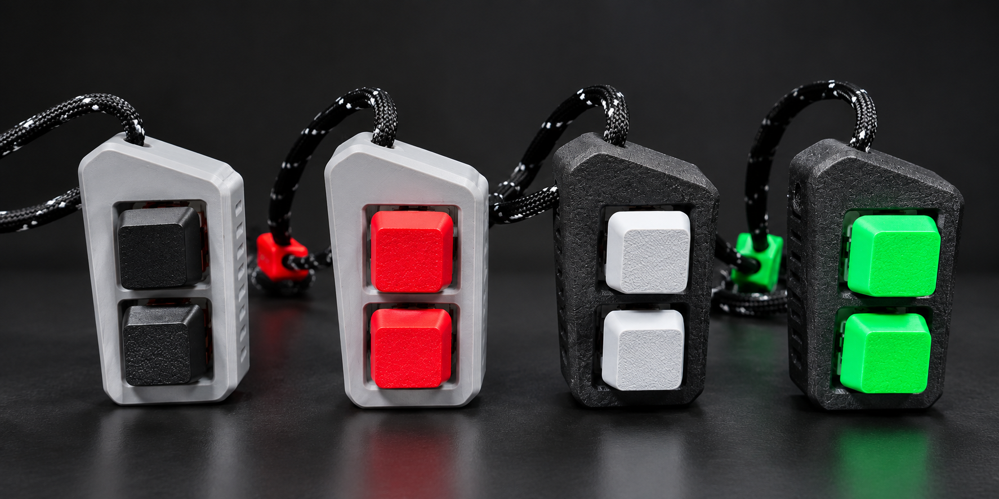
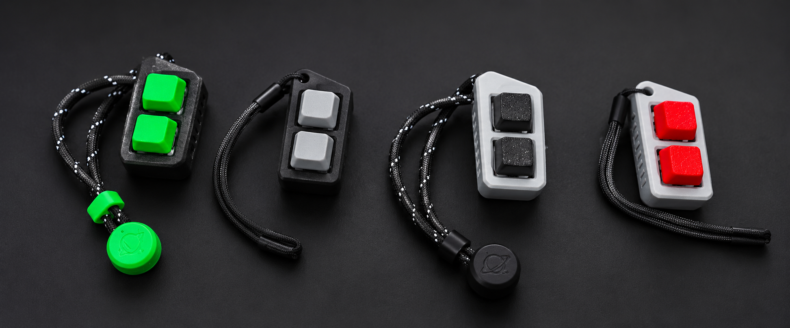
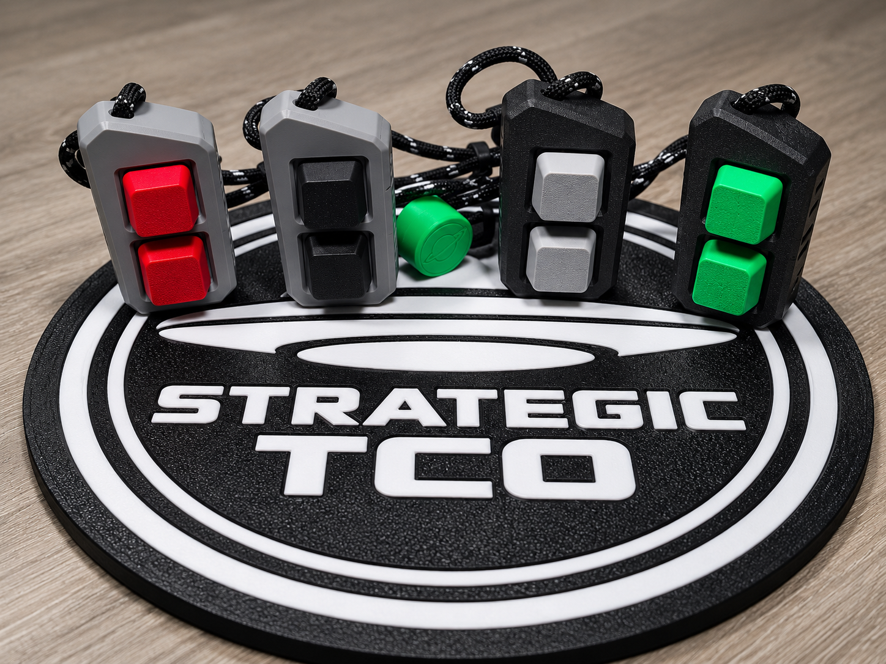
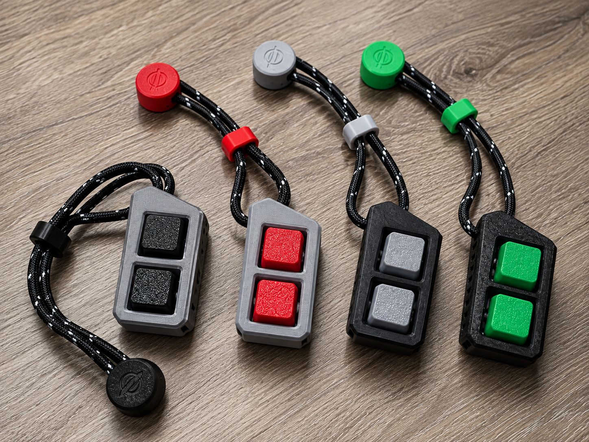
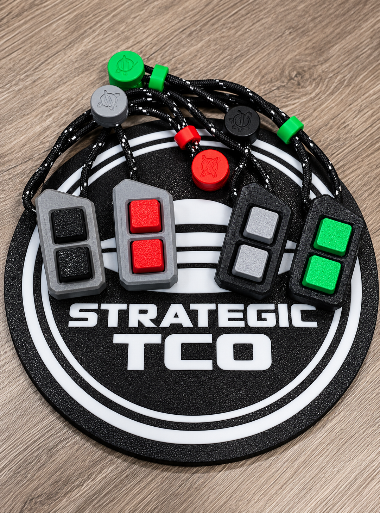
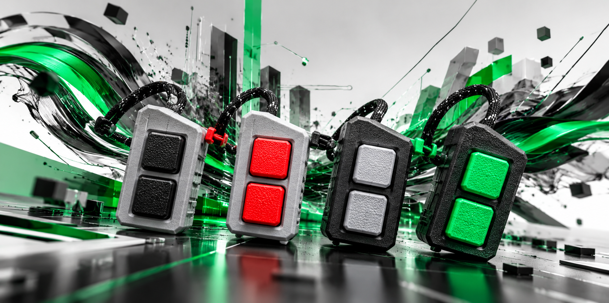
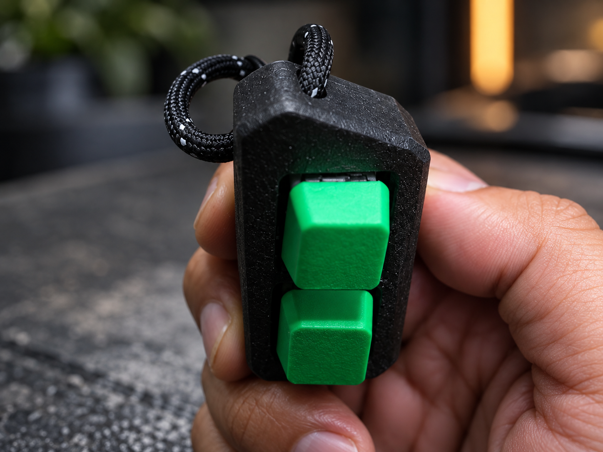
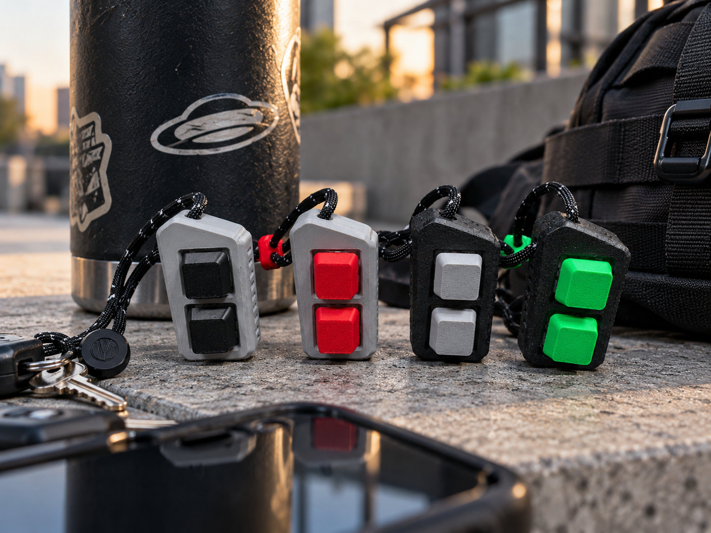
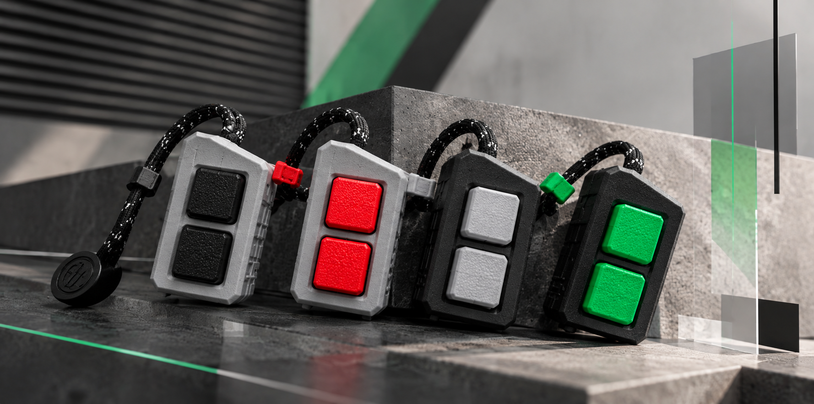

Required electronic input
No conventional electronic input is required for the core experience.

STRATEGIC TOY CO. / FIRST COMMERCIAL PRODUCT FAMILY
Mechanical interaction without a required digital consequence. Press it. Hear it. Feel it. That's the point.
0 I/O
CLAX 0 I/O is a compact handheld electromechanical tactile device built around real mechanical keyboard switches. Physical travel, resistance, actuation, return force, sound and tactile feedback happen immediately in your hand.
No display. No application. No network connection. No score to chase. The switch does not need to command another system for CLAX to do its job.
No conventional electronic input is required for the core experience.
No screen, notification, application or digital result is required.
Deliberate mechanical interaction with immediate tactile and audible feedback.

BUILT LIKE A DEVICE
CLAX takes familiar enthusiast hardware and removes the requirement that every interaction accomplish something on a screen.
Real MX-style mechanical switches provide physical travel, spring resistance, actuation, return force and authentic switch feedback.
The primary tactile function requires no battery, software, account, application, display or network connection.
Select CLAX models integrate passive NFC for product identity, device-specific web interaction and future digital utility.
CLAX Pro uses a reinforced through-body channel, 4 mm paracord, adjustable cincher and custom Strategic pull.
Select configurations use a rubberized textured surface for increased grip and a controller-like handheld feel.
Tech for the moments when you want less tech.

Conventional switches trigger things. CLAX separates the switch from the action. Actuation itself becomes the only desired result.
FOUR IDENTITIES
CLAX comes in a controlled family of fixed colorways.
Black body / bright green hardware
GAMING / ENERGYBlack body / light grey hardware
PC / HANDHELDGrey body / black hardware
DARK HARDWAREGrey body / bright red hardware
RETRO GAMING
CONNECTED ONLY WHEN YOU ASK
CLAX Pro contains a passive NFC component that can identify the physical device to compatible electronics. The digital layer remains secondary: CLAX continues to function completely as a tactile device without it.

ONE PRODUCT. TWO CONFIGURATIONS.
Both configurations deliver the same core 0 I/O mechanical experience. Pro represents the complete CLAX hardware concept.



ONE-PERSON DESIGN FIRM
Strategic Toy Co. is a one-person design firm built around a simple idea: make the kind of consumer electronics we actually want to carry, use and keep around.
CLAX 0 I/O is the first step in that journey, a small tactile device shaped by gaming, handheld hardware, mechanical keyboards and the belief that even simple tech can feel personal and worth caring about.
Every CLAX sold helps fund the next prototype, the next tool and the next idea. This is the beginning of a much bigger product company.
contact@charlesx0101.com
Zero required input. Zero required output. Real mechanical feedback.
Contact Strategic TCO